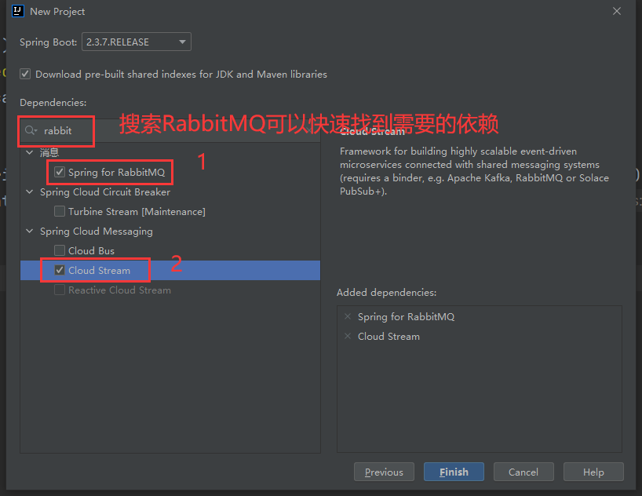

SpringCloudStream入门及案例
前言
在微服务架构流行的今天，消息队列的应用显得尤为重要，然而对于一个Java或者说一个Spring项目来说，不同的消息队列需要导入不同的driver依赖，这种情况下，就产生了一个痛点，即项目极有可能深度与某个特定的消息队列绑定，而通过本文所述的这项技术Spring Cloud Stream，可以将消息队列driver的实现与应用代码分离，即开发者不需要再写带有“mq特色”的代码了。
过去，我们可以通过Spring Integration来集成各种企业级别应用的外部系统，比如数据库、消息队列，随着Spring Boot的不断壮大和流行，官方将Spring Integration与Spring Boot整合到了一块，形成了一个新的项目–Spring Cloud Stream。
定义消费者程序
以下的案例根据Spring官方文档编写。
创建SpringBoot项目
由于Spring Cloud Stream项目是基于Spring Boot的，那么自然可以使用Spring Initializr进行快速构建，这个案例需要以下的依赖，这里用到的消息队列实现是RabbitMQ，当然如果你用的是Kafka、RocketMQ等，SpringCloudStream也支持，其他消息队列具体如何集成、配置都可以从官方文档上找到。
- Spring-RabbitMQ集成
- Spring Cloud Stream

定义消息实体
在这个项目中，我们一定是希望将Java对象作为消息在微服务之间传递，假设要传递的对象就是Person类，包含他的名字、年龄等信息。
1 | public class Person { |
定义消费者
由于相对比较复杂，这里暂时先不讨论生产者是如何定义的，而是先说说怎么定义消费者。
创建一个Configuration类（或者用Component、Service等注解都是可以的），然后其中定义一个Consumer的Bean，其职责就是用来接收并消费Person消息，如下所示。
1 |
|
可以看到这边使用了java.util.function.Consumer，使用过java 8特性函数式编程的朋友应该不陌生，这里不展开介绍java 8的函数式编程和lamda表达式，如果有需要的话，这里推介一个我比较喜欢的知乎博主的文章 在Java代码中写Lambda表达式是种怎样的体验？
这里需要说一下，SpringCloudStream目前的最新版本3.1.3支持两种编程模式，第一种就是我上面的这种，即函数式编程，也是官方主推的使用方式；而另一种基于注解的使用方式，虽然3.1.3版本也支持，但按照官方说法，在不久的将来也许就要废弃了，所以本文后续使用的都是Spring官方主推的函数式编程。
安装一个用于测试的消息队列
定义好消费者代码后，实际上这个应用程序就已经具备了接收Person对象的能力，但还有两个问题，从哪里消费？如何消费？
先回答第一个问题，由于我们导入的是RabbitMQ与Spring的集成依赖，如果你不进行任何配置，在SpringBoot程序启动时自动尝试去连接localhost的5672端口，即RabbitMQ的默认端口，连接上后，框架自己会使用默认的配置创建一个exchange和一个对应的queue。
第二个问题，如何消费，正常情况下，我们一般会有一个对应的生产者程序，但这个例子里，我们只是演示如何使用Consumer端，那么可以直接使用RabbitMQ的管理端来发送测试消息，消费者会自动从消息队列中取出消息（一般来说就是json字符串），并自动转换为java对象。
了解消费者的工作模式后，就来安装一个RabbitMQ吧，我这里使用的是Docker镜像，可以参考下面的Docker指令，创建的RabbitMQ容器默认向外暴露5672和15672两个端口，即可以直接通过浏览器访问RabbitMQ管理端。
1 | 拉取镜像rabbitmq:management，自带管理界面 |
运行完成后，可以访问localhost:15672来查看是否安装成功。
当然如果你改一下Spring连接RabbitMQ的配置，通过配置文件application.properties或者application.yml修改即可。
1 | spring: |
发送Person消息进行测试
将程序运行起来，可以看到控制台输出了几句话，一般是这样的。

如果有上面这几句输出，一般说明程序成功连接上rabbitMQ并且根据consumer的定义自行创建了exchange和queue。
前往rabbitMQ管理端，找到对应的queue，在payload内填入json数据，包括Person的两个字段，点击publish message。

查看应用程序的控制台，可以发现消费者已经将刚才发送的消息打印了出来。

当然这仅仅是一个简单的消费者使用案例，如何定义生产者？以及如何控制SpringCloudStream操作RabbitMQ等，这都需要更多的配置，在本文后续会讲到。
定义生产者程序
在上面的简单示例中，我们看了SpringCloudStream是如何定义消费者的，但一个完整的程序当然少不了生产者端，但相较于生产者程序，要稍微复杂一些。
Supplier类型的生产者
既然生产者是通过定义一个java.util.function.Consumer来实现的，如果你了解Java函数式的使用，可能会猜想，生产者程序是不是通过java.util.function.Supplier来实现呢？可以这么说，但不完全对，这只是定义生产者程序其中一种方式。
在上面消费者的例子上，将原先的Consumer修改一下，改为Supplier，为Person实体声明一个生产者的Bean。
1 |
|
代码非常简单，仅仅是声明了一个Supplier类型的Bean，那么它是如何生产Person类型的消息的呢？事实上，Supplier类型会定期（默认一秒钟一次）自动生产对应的消息，然后发送到消息队列。
这大概不是你想要的答案吧？没错，一开始我也觉得怪，但这种Supplier的方式是官方文档上介绍的。
一般情况下，我们使用消息队列的场景可能是这样的，一个web请求过来了，触发了某些需要异步处理的事务，于是产生一条消息，发送至消息队列，消费者端监听到这条消息后，才开始执行异步这个事务。
好在Spring官方也提供了这种支持。
使用StreamBridge来充当生产者
StreamBridge可以理解为一个管道，它提供了一个send方法，可以将消息发送至某个消息队列，我们可以使用它来实现生产者的功能。
send方法解析
我们先来看一看StreamBridge中关于send的源码注释。
1 | /** |
注释的大意基本是这样的：将data，也就是我们的消息对象，以默认的JSON格式发送到“binding”那边，如果发送成功，会返回true，如果发送失败，则返回false或者抛出异常。
这里需要了解binding是个啥？这里也不卖关子了，binding可以理解为一个绑定关系，绑定的双方实际上就是消费者方法和消息队列，这里可能让你比较迷惑，为什么讲生产者，又扯起消费者队列了？但你可以这么想想，StreamBridge就是个管道，我们通过这个管道，将消息或数据发送至消费者队列，binding即目标消息队列，这样是不是就好理解了？
那这边binding该怎么定义？
配置binding
在原有的消费者程序基础上，配置application.yml。这里需要注意一下，我们在Consumer程序中定义的那个Consumer方法名为consumePerson。默认情况下，SpringCloudStream会自动为Consumer和Supplier类型的方法生成binding，比如这里的consumePerson即自动生成consumePerson-in-0的binding，而如果是Supplier类型的方法，则生成xxxx-out-0。
我们可以修改默认的binding名，使用spring.cloud.stream.function.defination和spring.cloud.stream.function.bindings即可。
假设，这里，我们希望将原来长长的那一串consumePerson-in-0改的容易理解一些，改成person-receive，可以像下面这样。
1 | spring: |
其中spring.cloud.stream.function.defination是消费者方法定义的声明，你所定义的消费者方法必须写在这边，来为它们修改binding。
这个例子中，我们只有一个消费者方法名为consumePerson，我们将其binding名改为person-receive。
那么，binding如何跟queue对应呢？默认情况下，binding名即为queue名，按现在的配置，启动程序后，SpringCloudStream会自动为我们声明一个person-receive的queue。
我们也可以修改这个queue的名称，仍然使用application.yml进行配置即可。
1 | spring: |
如上述配置所示，我们将binding person-receive的目标指向一个叫person-receive-channel的queue，使用的是spring.cloud.stream.bindings.xxx.destination，该配置项可以让我们自行指定binding与queue之间的映射关系。
启动程序，查看RabbitMQ界面，果然发现自动生成的是person-receive-channel，但可以发现，person-receive-channel名称后面还有一串奇怪的字符串，这实际上是group，本文后面会讲到。
声明并调用StreamBridge
既然现在已经了解了binding到底是什么东西，我们就可以比较方便的使用StreamBridge了，参照下面的代码。
1 |
|
我们可以将StreamBridge给注入到需要使用的地方，比如Service层或者Controller层。然后调用send方法，如前文所述，StreamBridge会将Person对象以json格式发送到对应binding的queue上，这个例子中，我们已经配置了，binding为person-receive，binding对应的queue为person-receive-channel。
小结
这里为这边的配置做一个小结：spring.cloud.stream.function.defination为我们自己声明的消费者方法名，spring.cloud.stream.function.bindings为方法名到binding的映射（默认情况下，不配置的话，即根据方法名自动生成xxx-in-0这样的binding）；spring.cloud.stream.bindings.xxx.destination为binding到queue的映射（默认情况下，根据binding名自动生成一个对应的queue）。
最后，通过StreamBridge，将Person对象发送到相应的queue内即可。
group概念
前面的生产者案例中，我们看到了如何声明消费者的binding和queue的对应关系，也发现了SpringCloudStream默认的生成的queue包含了一个奇怪的字符串，实际上这个后缀是该binding所属的group，这是啥？这一节，我们就来了解一下SpringCloudStream的group概念。
对于消费者而言，SpringCloudStream提供了一个group的概念，下面举一个例子来更好的理解。

上述例子中，数据源是HTTP，发送到raw-sensor-data（可以理解为数据处理层），然后raw-sensor-data将其分别发送给两个程序HDFS Write（写入数据库）和Average Calculator（参与计算），假设线上环境中，两个程序为了保证高可用，都是多实例的，HDFS Write有实例1和2，Average Calculator也有实例1和2。那么SpringCloudStream在这种情况下，如何保证多实例不会重复消费数据？这里就要引入group的概念，按照Spring官方的解释，同一个group下的多个相同消费者A、B、C，对于同一个消息info，虽然A、B、C都可以消费这个信息，但由于它们是同一个group，只有其中一个会去消费它。默认情况下，消费的顺序是轮询的，这次是A，下次是B，再下次是C，然后从头开始轮替。
在上图的例子中，将两个HDFS Write的实例的group设为hdfsWrite，将两个Average Calculator的实例的group设为average，如此一来，两个程序都只有其中一个实例会消费消息，避免了消息的重复消费。
配置group
回到我们自己的例子上来，假设现在我们的程序也有两个实例，此时也需要设置group来防止重复消费，我们可以通过两种配置方式来设置它。
spring.cloud.stream.default.group
spring.cloud.stream.bindings.xxx.group
第一种方式的配置会被所有consumer共享，即所有的consumer都属于这个group，第二种方式是为指定binding的group，随意使用其中哪种都可以实现我们的目标。
1 | spring: |
启动程序，发现生成的queue名自带了main后缀，无论启动多少个实例，一条消息只会供其中一个消费者消费，而不是每个实例都去消费一遍。
总结
本文简述了Spring Cloud Stream的作用、使用，但3.0以上的Spring Cloud Stream无论是功能、特性，都远比本文所述的要多得多，比如对单元测试的支持、响应式编程、错误处理机制等，若你还有更多疑问，可以参考Spring Cloud Stream的官方文档。